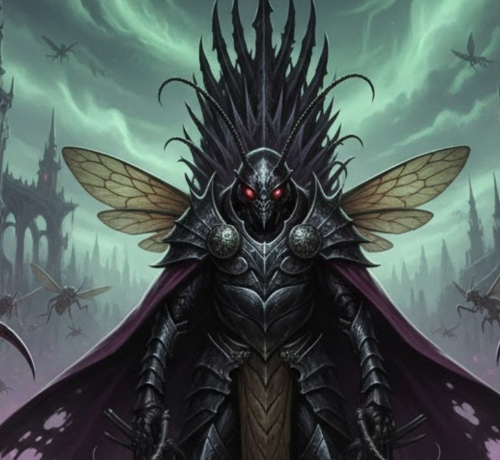
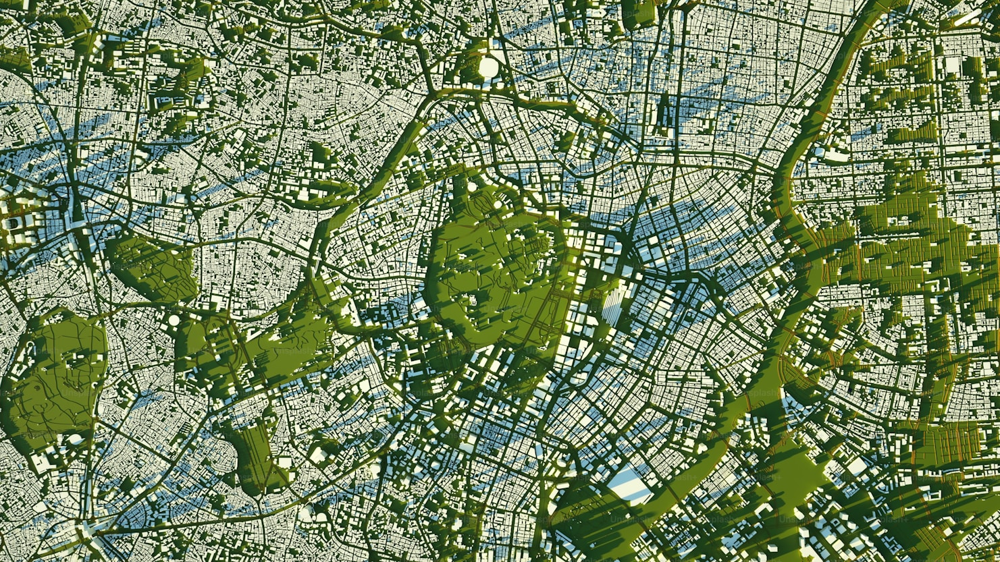

У глибинах старих будинків, серед тіні й тиші, живе істота, про яку ходять легенди — Великий Темний Володар Тараканіще. Його поява завжди супроводжується шелестом у темряві та відчуттям присутності чогось древнього. Кажуть, він бачить усе, що приховане від людського ока, і знає таємниці, про які мовчить навіть ніч.
